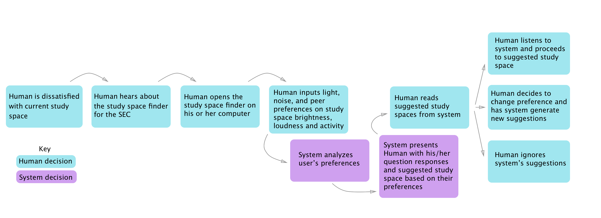
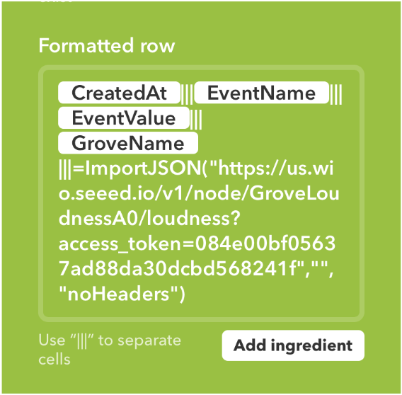
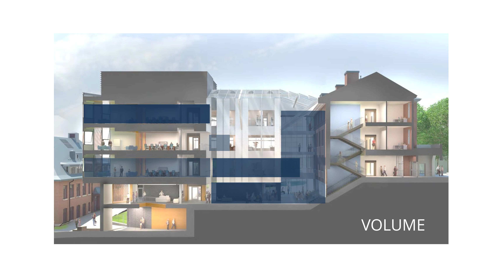
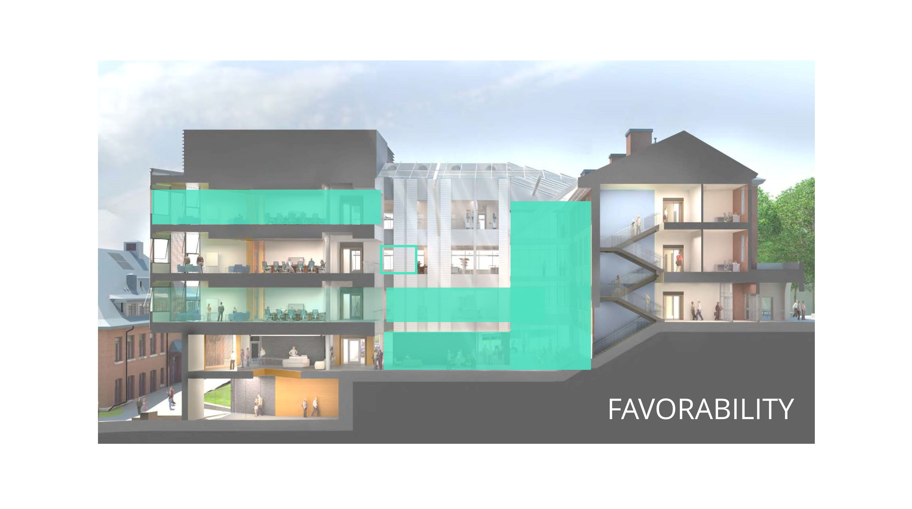
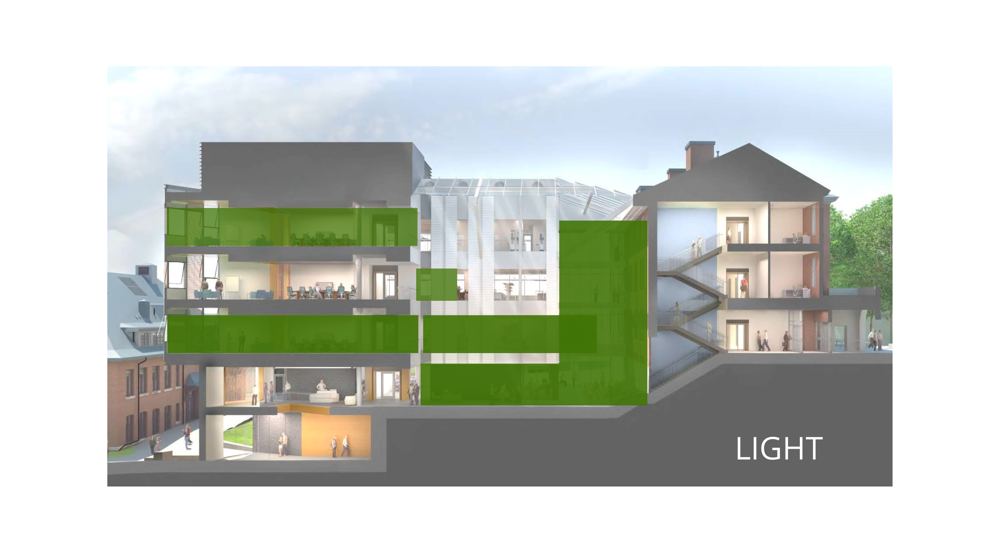
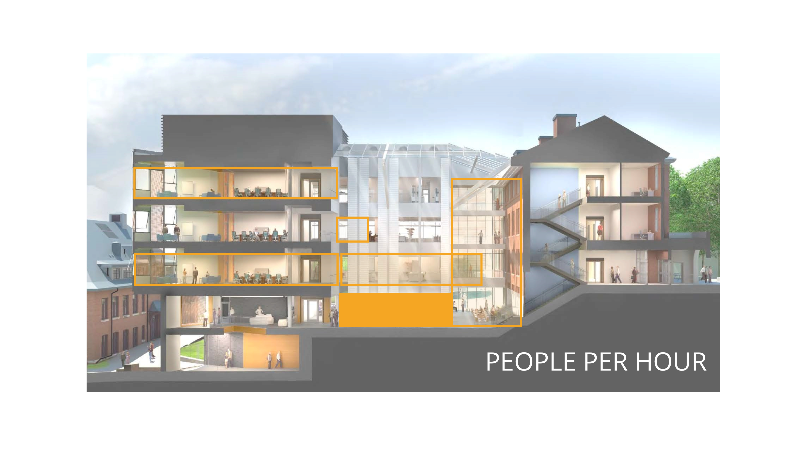
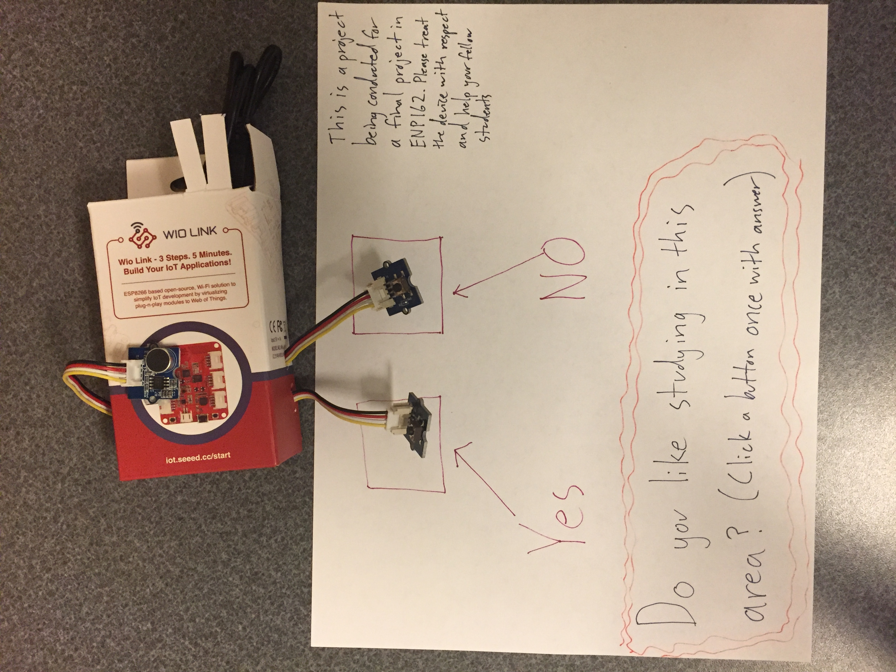
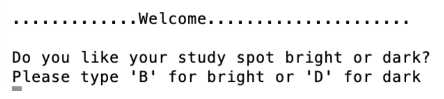
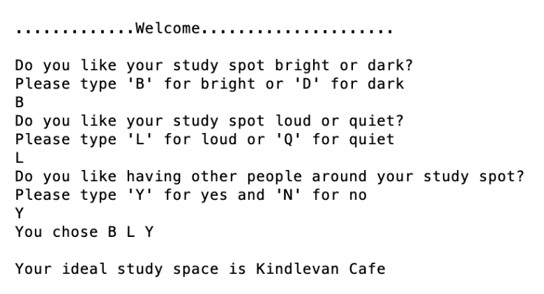
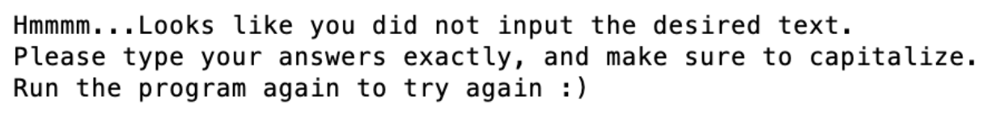

This project was conducted as final assignment for a class entitled “Human Machine System Design”. The project required we deploy a sensor network using Internet of Things (IOT) devices to collect at least fifty hours of data tied to location data. Additionally, a portion of this data needed to come from human input.
The group sought to explore the newest building on Tufts’ Medford campus, the Science and Engineering Complex (SEC). Originally, the group wanted to measure environmental variables such as CO2 levels, air quality, and light. However, the scope of the project was changed to mapping variables that would affect the desire for a student to study in different places within the building. As engineering students who spend much of their time in this building, we were curious what environment constituted the “best” study spot.
For this project, we were limited by the time to complete the project and the funds allowed to buy materials for the project. We found meaningful results and created visualizations of our data as well as a simple algorithm to help students find their best study spot since we realized through implementation that everyone has different desires when it comes to studying environment.
Project Motivation
Our findings are important because they allowed the team to glean meaningful relationships between variables and provide a custom system for selecting the desired area for studying. Granted this is current model is simple, it provides the base to add time based data as well as weights to the individual variables in the future. We chose to measure favorability, volume, and light because we believe that these are the three most important factors in finding an ideal studying environment.
Additionally, the data collection process helped us explore the realm of large scale, passive data collection using IOT devices. This was an invaluable learning experience.
Task Analysis

User Profile, Psychology, and Needs
Our user is any visitor to the SEC. This is most often a Tufts student, but can be a faculty member or campus community member looking for a spot to do some work. When first entering the SEC, it can be overwhelming as many busy STEM students are walking around and conversing. Additionally, the building is large and has many places to look. We envision the implementation of our study spot finding algorithm to be placed near a main entryway to aid visitors and welcome them to the building.
Needs
A user must be able to share their preferences
A user must be able to change their preferences
A user must receive a recommendation
Solution Description
Our IOT sensor system was built with automation in mind. We each assembled the hardware portion of our system using a Wio Link, two buttons, one loudness sensor, and one brightness sensor. To power these units, we used portable chargers that we already had to reduce the total cost of the system. To monitor and store the information, we decided to use the IFTTT platform due to its Wio integration. This allowed our team to log user input (through buttons) alongside the loudness information at that time. This information was stored in a Google Sheets spreadsheet which allowed us to store the information in a way that was easy to analyze.
Our “human as a sensor” in this experiment were people in the SEC. Students approached our system and could press a “yes” button or a “no” button in response to the question “Do you like studying in this area?”. Our system was able to work by collecting data from 3 different modalities across different areas within the SEC. Some of these places included kitchenettes, the atrium, Kindlevan cafe, and some other study spaces within the building. Members of our team would place the sensor hardware for blocks of time during the day and remotely monitor them through Google Sheets to make sure they were still running. From our data collection, we were able to directly see patterns in loudness, whether people liked studying, and brightness all in the context of the physical location of the sensor system. Additionally, the amount of user input was used to measure the amount of traffic that these spaces received.
The IFTTT applets did not have a way to natively read two sensor values at one time, so we had to build a system around this. Using the default applet ability of storing the time a button was pressed in a spreadsheet, we added in another parameter which would execute a GET request to the Wio Link asking for its loudness sensor reading. This would then be stored alongside the button press information. Additionally, to make sure we were collecting a sizable amount of data, we ran an addition IFTTT applet that continuously checked the loudness sensor throughout the day. These two IFTTT applets automated the process of collecting and organizing data.

All of this collected information comes together through the recommender tool on this page. Using the data collected, users can enter their preferences (brightness, loudness, and population) then receive the ideal study space that best matches their preferences. This tool allows people who have never studied in the SEC find the best spot for them without going through trial and error. Using IOT sensors and data analytics, we hope to improve students’ studying in the SEC.




Description of Interactions
As mentioned, our IOT system uses a light sensor, a loudness sensor, and two buttons. The two buttons are how the system interacts with users. The team set up the system with a sheet of paper asking users for input about whether or not they enjoyed studying in the area they were in. The users had the option to answer yes or no to the question presented. Button presses were logged meaning that we could see when buttons were pressed, the conditions in the space at that time, and if the user liked studying in the area or not.

The other sensors were more straightforward, as most of the values were captured and stored using GET requests to the Wio and the IFTTT integration with Google Sheets. We set loudness sensor information to add a row in our data sheet every time the value was equal to or greater than 0. This caused the applet to run approximately once every 5 - 15 minutes. This timing is largely due to the way that IFTTT runs its servers. Our IOT system used loudness and brightness sensors to interact with the world around it, and we used buttons and IFTTT to make our system interact with the user.
User Walkthrough
Currently, users can access the recommendation system through this page. In the future, we envision this system being available inside the main entrances to the SEC so any visitor could use the system upon arrival. When interacting with the system, the user will be greeted by a message like this:

Based on the user’s light preference of his or her study space, he or she will enter “B” or “D”. The user will see two more questions in this same format, one asking about noise levels and another asking if the user likes having people around when he or she is studying. Based on the user’s answers, the system will recommend a study spot. For example:

It is important for the user to enter capital letters when using this system. The current version of this system does not understand lowercase letters. If the user enters something besides capital letters, at the end of the program they get an error message saying:

Once the user has received a study area suggestion, he or she can look at the heat maps provided (see below pictures) to learn more about the study spaces in the SEC and see what contributed to the system’s suggestion.
Future versions of this system could incorporate more data in order to further personalize the user’s experience. Possible future data collection could include room temperature, type of surfaces available (tables, couches, etc.), and proximity to amenities like bathrooms, food or outlets. With more data available, the system could ask users more questions and give a more personalized answer.
Future Directions + Limitations
As noted, the cost of more sensors and a processing unit with more options were some limitations to the resolution of the collected data. However, we felt that we were able to get meaningful data with the hardware we had. As with any study, more time to collect data in varying times of the year and more areas could have helped us generate even more insights.
More human decisions could have improved the quality of the user input portion of this system. Perhaps, allowing users to answer how much they liked studying in the area using a potentiometer to create a rating scale, or simply adding additional buttons to add different levels of study space enjoyment (similar to machines found in shopping centers). Additionally, user comments about why or why not they enjoyed the space could have helped us determine what Tufts students really look for in their ideal study space.
Our system performed quite well and we were able to extract the information we were looking to through using it. Higher quality sensors could have helped our loudness information as sometimes we got values of 0 even when there was clearly sound at that time. Additionally, the brightness information seemed extremely similar in different parts of the SEC even if the brightness in those areas felt different to our team. If we were to source higher quality components, we might have had more consistent sensor readings. Additionally, we could further improve our system by creating a proper housing for the hardware. While we felt that our system worked as expected, there is always room to improve and refine our design.
Our future directions can be seen through the recommendation system. Ideally, we would have our system take in a users preferences while they are at the SEC then recommend a place to them while showing the user a heatmap of loudness, brightness, and population information in the SEC. The information our team collected could be used to help people streamline their SEC studying experience.
Documentation of System
Currently, this system is available on this page! Scroll to the recommender on this page to get started. When prompted, input your answers to the light, noise, and amount of people around questions. Only use the capital letters asked for by the question, otherwise the system will not be able to calculate your results. Happy studying!
Video
As a team, we decided that a video describing our process in a narrative fashion would be an effective way of conveying our project. Note: We took a slightly silly approach, and at the time our findings were not solidified. Please enjoy!

 The IFTTT applets did not have a way to natively read two sensor values at one time, so we had to build a system around this. Using the default applet ability of storing the time a button was pressed in a spreadsheet, we added in another parameter which would execute a GET request to the Wio Link asking for its loudness sensor reading. This would then be stored alongside the button press information. Additionally, to make sure we were collecting a sizable amount of data, we ran an addition IFTTT applet that continuously checked the loudness sensor throughout the day. These two IFTTT applets automated the process of collecting and organizing data.
The IFTTT applets did not have a way to natively read two sensor values at one time, so we had to build a system around this. Using the default applet ability of storing the time a button was pressed in a spreadsheet, we added in another parameter which would execute a GET request to the Wio Link asking for its loudness sensor reading. This would then be stored alongside the button press information. Additionally, to make sure we were collecting a sizable amount of data, we ran an addition IFTTT applet that continuously checked the loudness sensor throughout the day. These two IFTTT applets automated the process of collecting and organizing data.